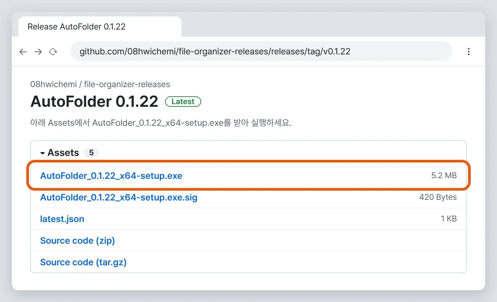
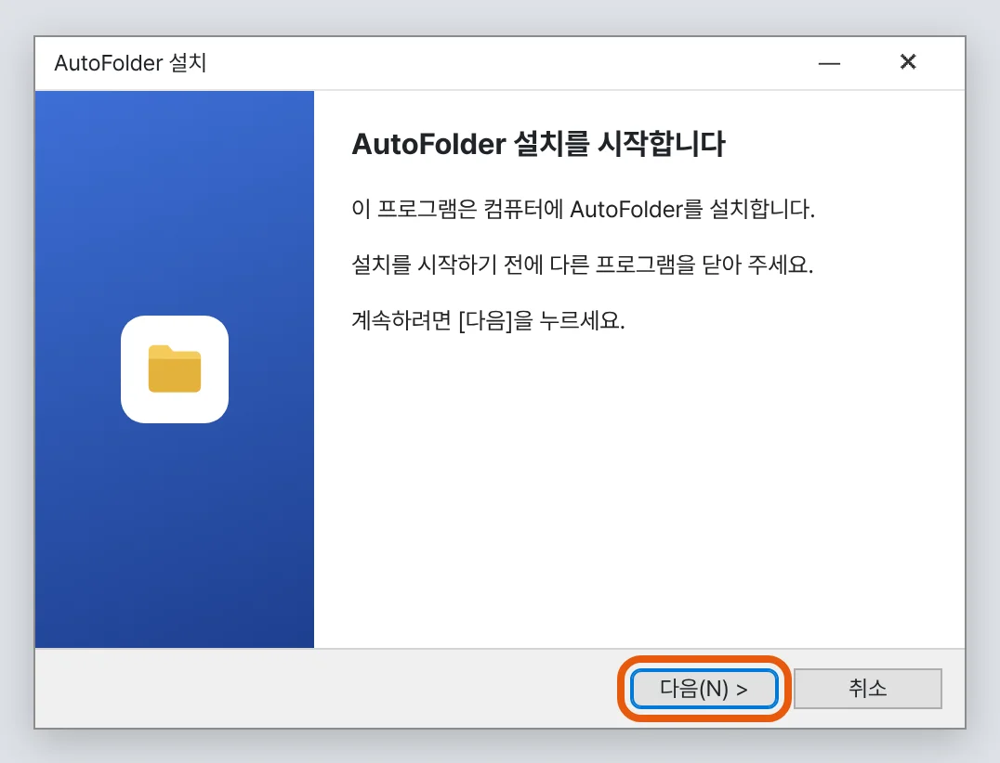
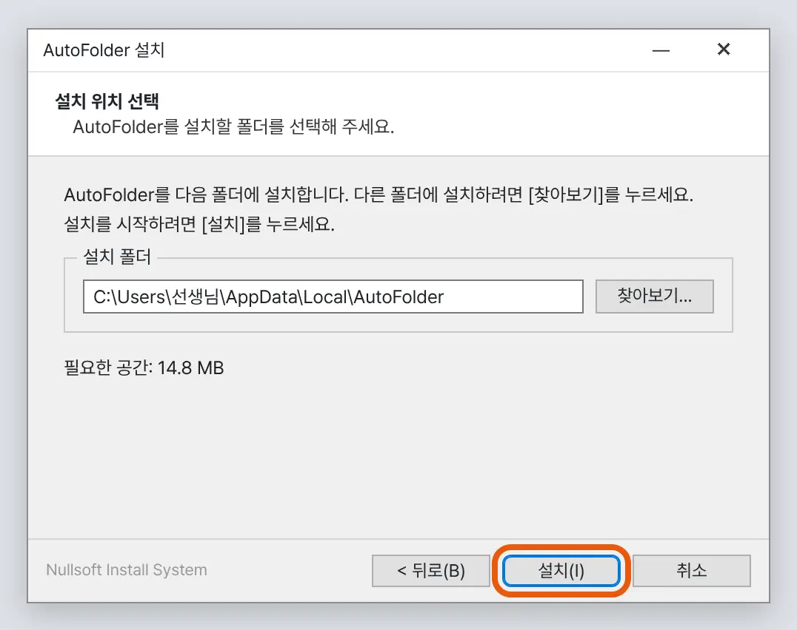
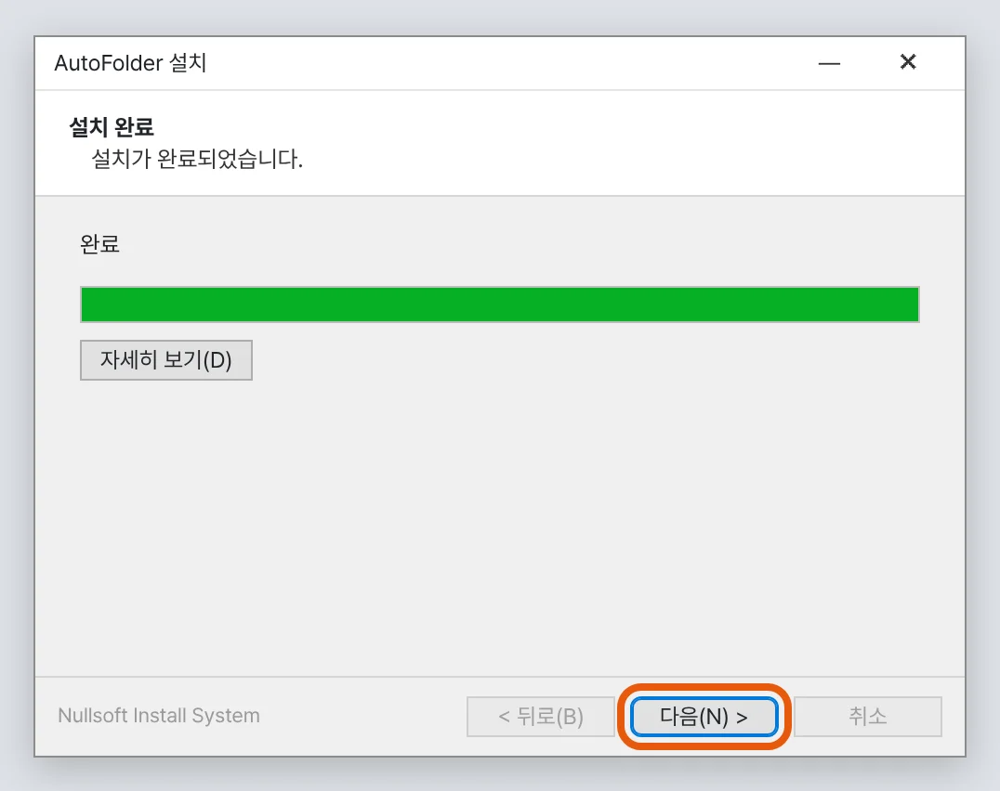
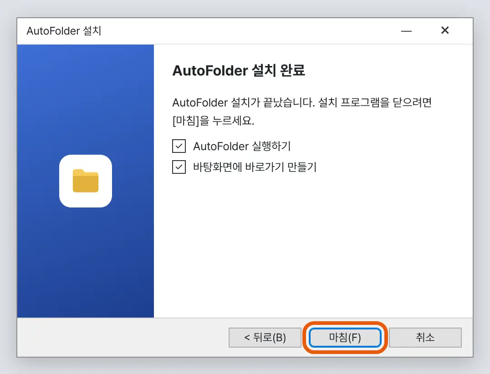
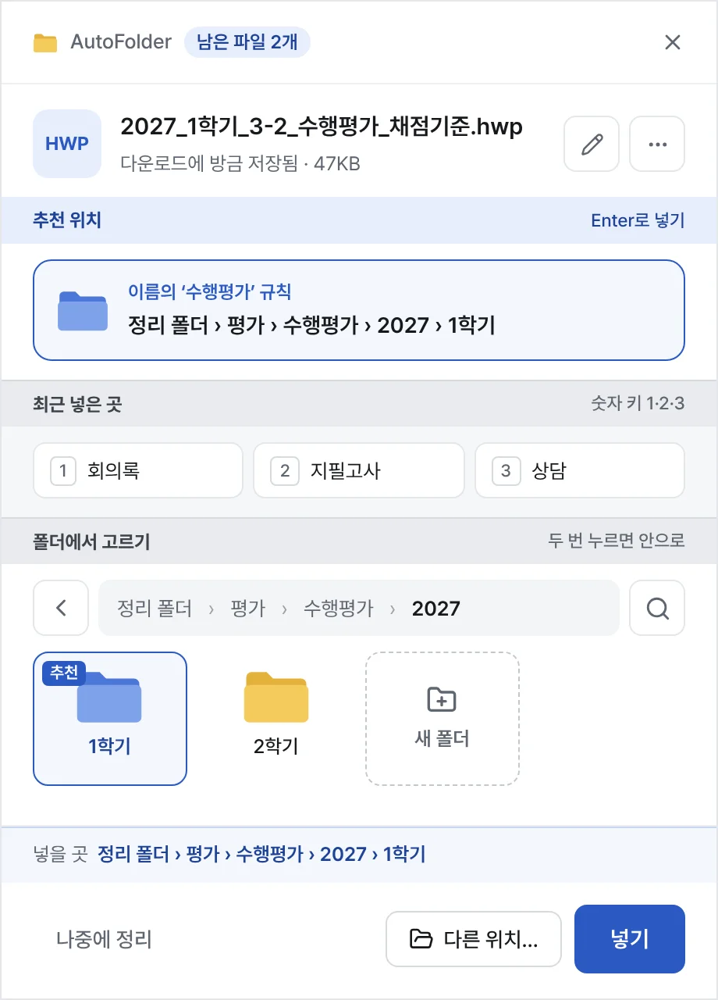
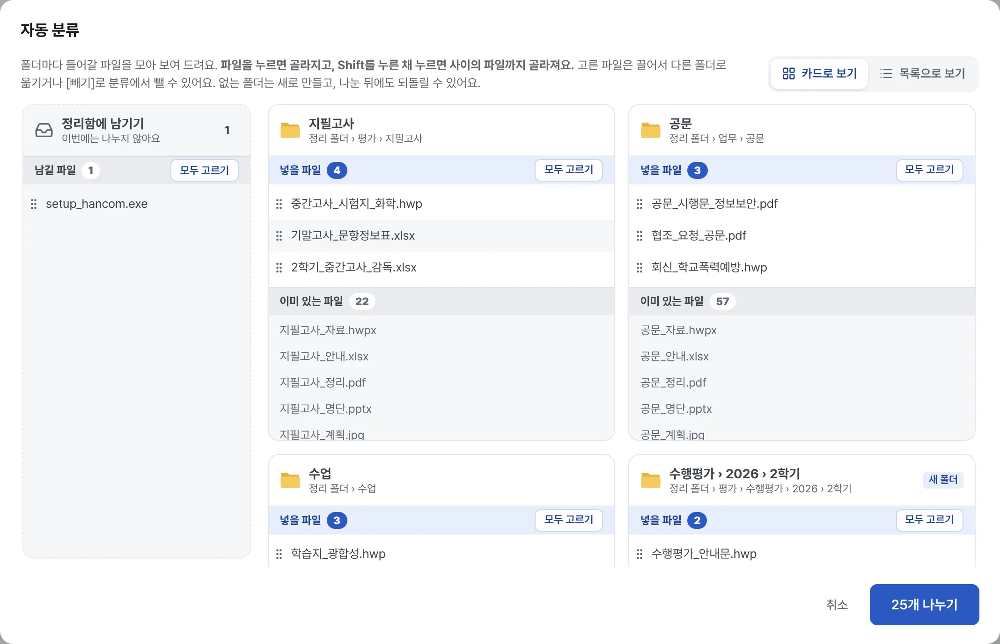

무료 · Windows 10/11 · 5분이면 끝나요
크롬 주소 칸에 아래 주소를 넣고, 맨 아래 Assets에서 …x64-setup.exe 하나만 받으세요. 엣지보다 크롬이 훨씬 간단해요.
github.com/08hwichemi/file-organizer-releases/releases/latest
무료 프로그램이라 처음 한 번만 나오는 경고예요. 바이러스라는 뜻이 아니에요.
관리자 비밀번호는 필요 없어요. 설치 위치는 그대로 두세요. 1분이면 끝나요.




나머지는 고르지 않고 다음만 눌러도 되고, 마지막에 시작하기. 모두 나중에 설정에서 바꿀 수 있어요. 그 뒤로는 시계 옆 트레이에 켜져 있고, 업데이트는 알아서 해요.

